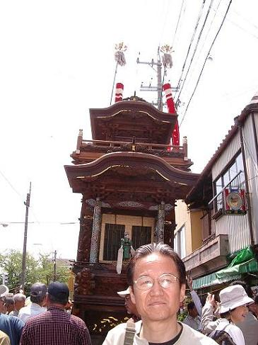
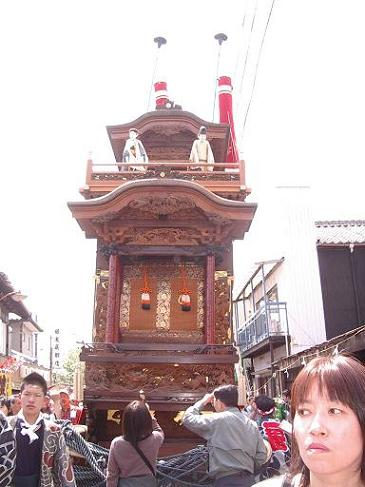
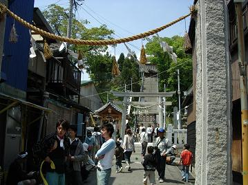
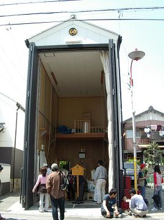
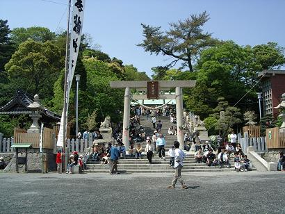
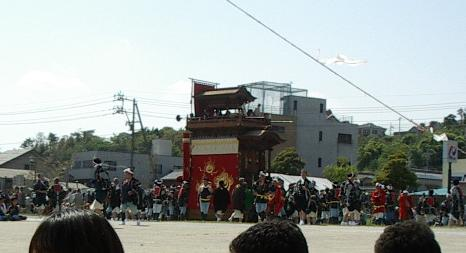
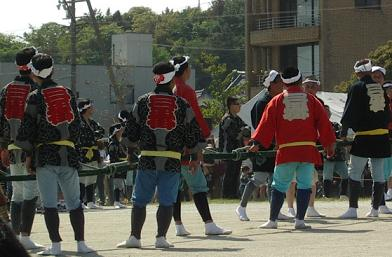
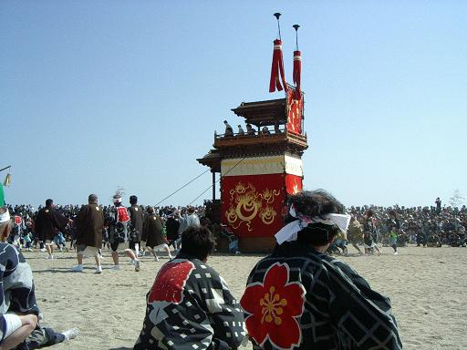
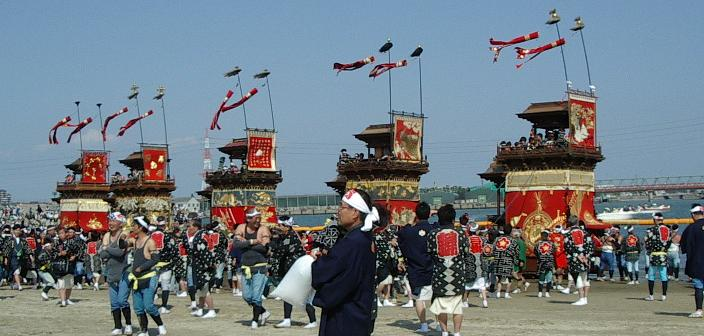

愛知県の知多地区には沢山の山車があると知って、地元出身の友人お勧めの亀崎『潮干祭り』に行ってきました。
今年三月に重要無形民族文化財に指定された、３００余年の伝統を持つお祭だそうで、５輌の山車を海中に曳き下ろすという見所があり、大変勇壮なお祭です。


左は紺羅紗地の大幕と七宝前棚四本柱が特徴とされる石橋組みの青龍車です。
神仙思想『四神』の青龍や朱雀、道教の『五嶽真形図』などで装飾された山車で、帝室技芸員竹内久一作の壇箱彫刻と川口文左右衛門作の七宝四本柱は山車装飾としては唯一のものとして大変貴重なものだそうです。
唐子が逆立ちをする上山からくりは長く途絶えていたそうですが、昭和４８年に石橋組みの若者によって復元されたとのことです。
右は五輌の山車の一番車となる東組みの
宮本車です。
その名の通り神社と深いつながりを持っており、古事記を題材とした神々や日本国の誕生などを表現している山車は、応仁・文明(１５世紀後半)頃に始まったとも伝えられる潮干祭の山車の元祖なのだそうです。
精緻な壇箱彫刻の上にある昇龍降龍の堆朱四本柱は青龍に並び大変貴重なものとされ、三人の子供が隠れ使いで演じる三番叟とともに見ものです。

この左の写真の秋葉社に山車に乗った人形が奉納されます。

お宿（写真右）と言っていいのかどうかわかりませんが、お祭以外の日には山車はここに収められています。

昭和３４年の伊勢湾台風後、護岸整備により長い間山車海浜曳き下ろしが途絶え、この神明神社前の広場で曳き廻されておりましたが、平成５年に人工海浜が完成し曳き下ろしも復活しました。
昭和４１年に五輌の山車が愛知県有形民族文化財に指定されたのをきっかけに、破損や紛失などで長い間途絶えていた『からくり人形』の修復や復元が相次いでなされ、現在では５輌すべての山車の前棚や上山に２種類のからくり人形が奉納されているそうです。

浜は波の影響を受けないように細長い浮き輪で周りを囲い、その外側では警備の船が５隻ほど配置され、その背後ではウオーターバイクがまるで自分たちのレースを見学するために人が集まっていると錯覚でもしているかのように、スピードを競ってぶおん ぶおんと走りまわっています。
町中を曳き廻された山車が一輌、また一輌と時間を置いて入って来る間に、それぞれの組みの法被を着たお年寄りたちが山車が曳かれる浜に落ちているゴミなどを拾って歩きます。
中にはすっかり出来上がって、ふらふらと歩いているおじさんもいたりしますが、そこはもうお祭ですからこんなものです。
笛や太鼓のお囃子を鳴らして山車が入ってくるに連れて、ガードマンや法被を着た人たちの姿が増えてきて、折角リング・サイドの良い場所をとったというのに、目の前にわらわらと人が立ちはだかります。
上半身裸にになってエプロンのような胸当てをした若者たちが、交差した紐の間から真っ赤に日焼けした背中を外側に向け、円陣を組んで座り込み
「ヨイサー！ヨイサー！」
「ヨイサー！ヨイサー！」
と、身体を左右に振りながら力強く掛け声を掛け始め、これから佳境に入ろうとする祭りムードを盛り上げていきます。

一番車である宮本車がぐい！ぐい！と曳かれたり押されたりして海の方向に向き直り、山車の正面から伸ばされたロープを手にした男たちが居並びます。
よくよく見ると、ロープにはムカデの脚のように等間隔を置いた横綱が結ばれ、曳き手はその横綱に力を込めて引っ張るようで、子供用に山車の端っこから出ているロープもあり、山車の転倒を防ぐために両脇からもロープが引っ張られています。
後ろから行く男たちは、山車を両脇から支える心棒（というかどうかは知りません）を担いで走るようです。
曳き廻しの間外されていた吹流しの幟も山車の両側に立てられました。

「ヨイサー！！」

海の中に曳き下ろされた山車は海中で方向転換され、潮水に浸かったまま先へ進み、後続の山車を待ちます。
これが、五輌すべてで繰り返され、勢揃いしたのがこの写真です。
この後、曳き上げとなりますが、今度はなだらかながらも砂の斜面を上らねばならないので、これまた見ていても手に汗を握ることとなるのでしょうが、そちらはすでに人がいっぱいで、写真を写せるほど近くには行けそうにないので私はここで引き上げました。
同じような方も沢山いたようで、ここで帰っていく人も沢山いましたが、まだまだやってくる人も多いようで小さな駅の券売機の前には長い行列ができていました。
作成:2006-05-17
コメントはこちら